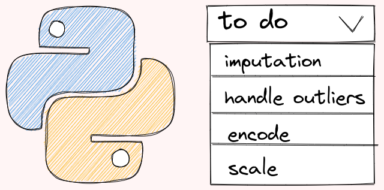

6.2. Feature Engineer#

This section covers some libraries for feature engineering.
6.2.1. Split Data in a Stratified Fashion in scikit-learn#
Normally, after using scikit-learn’s train_test_split, the proportion of values in the sample will be different from the proportion of values in the entire dataset.
from sklearn.datasets import load_iris
from sklearn.model_selection import train_test_split
import numpy as np
X, y = load_iris(return_X_y=True)
np.bincount(y)
X_train, X_test, y_train, y_test = train_test_split(X, y, random_state=0)
# Get count of each class in the train set
np.bincount(y_train)
# Get count of each class in the test set
np.bincount(y_test)
If you want to keep the proportion of classes in the sample the same as the proportion of classes in the entire dataset, add stratify=y.
X_train, X_test, y_train, y_test = train_test_split(X, y, random_state=0, stratify=y)
np.bincount(y_train)
np.bincount(y_test)
6.2.2. Avoiding Data Leakage in Time Series Data#
In time-sensitive datasets, a random split can cause data leakage by including future data in the training set, which biases the model. To prevent this, split data chronologically:
import pandas as pd
from datetime import datetime
from sklearn.model_selection import train_test_split
# Sample data
data = {'customer_id': [1, 2, 3, 4, 5],
'amount': [10.00, 20.00, 15.00, 25.00, 30.00],
'date': ['2021-01-01', '2021-01-02', '2021-01-03', '2021-01-04', '2021-01-05']}
df = pd.DataFrame(data)
df['date'] = pd.to_datetime(df['date'])
# Random split
train_data, test_data = train_test_split(df, test_size=0.3, random_state=42)
print("Random split:\n")
print("Train data:\n", train_data) # May contain future dates
print("Test data:\n", test_data)
# Time-based split
cutoff_date = datetime(2021, 1, 4)
train_data = df[df['date'] < cutoff_date]
test_data = df[df['date'] >= cutoff_date]
print("\n\nTime-based split:\n")
print("Train data:\n", train_data) # Data before the cutoff
print("Test data:\n", test_data) # Data after the cutoff
6.2.3. TimeSeriesSplit for Cross-Validation in Time Series#
For time series data, using TimeSeriesSplit ensures the temporal order is maintained during cross-validation:
import numpy as np
from sklearn.model_selection import TimeSeriesSplit
X = np.array([[1, 2], [3, 4], [1, 2], [3, 4], [1, 2], [3, 4]])
y = np.array([1, 2, 3, 4, 5, 6])
tscv = TimeSeriesSplit(n_splits=3)
for i, (train_index, test_index) in enumerate(tscv.split(X)):
print(f"Fold {i}: Train={train_index}, Test={test_index}")
This approach ensures:
Temporal Integrity: Respects the data order.
Growing Training Set: The training set increases with each fold.
Forward-Moving Test Set: The test set is always a future sample.
No Data Leakage: Future information is never used to predict past events.
6.2.4. Enhancing Data Handling with scikit-learn’s DataFrame Support#
By default, scikit-learn transformers return NumPy arrays. To return pandas DataFrames, use the set_output method:
from sklearn.preprocessing import StandardScaler
import pandas as pd
data = {"age": [25, 30, None, 35], "income": [50000, 60000, 70000, None]}
df = pd.DataFrame(data)
scaler = StandardScaler().set_output(transform='pandas')
print(scaler.fit_transform(df))
You can apply this in pipelines too:
from sklearn.impute import SimpleImputer
from sklearn.pipeline import Pipeline
pipeline = Pipeline([("imputer", SimpleImputer(strategy="mean")),
("scaler", StandardScaler())]).set_output(transform="pandas")
print(pipeline.fit_transform(df))
6.2.5. Efficient Feature Transformation with make_column_transformer in scikit-learn#
make_column_transformer allows you to apply different transformations to specific feature sets:
import pandas as pd
import numpy as np
data = {
"cat1": ["A", "B", "A", np.nan, "C"],
"cat2": ["X", "Y", np.nan, "X", "Z"],
"num1": [10, np.nan, 15, 25, 30],
"num2": [1.5, 2.0, np.nan, 2.2, 1.9],
}
X = pd.DataFrame(data)
y = pd.Series([0, 1, 0, 0, 1])
from sklearn.compose import make_column_transformer
from sklearn.pipeline import make_pipeline
from sklearn.preprocessing import StandardScaler, OneHotEncoder
from sklearn.impute import SimpleImputer
from sklearn.linear_model import LogisticRegression
# Define the numeric and categorical features
numeric_features = ["num1", "num2"]
categorical_features = ["cat1", "cat2"]
# Define the transformers and their corresponding columns
numeric_transformer = make_pipeline(SimpleImputer(strategy="median"), StandardScaler())
categorical_transformer = make_pipeline(
SimpleImputer(strategy="most_frequent"), OneHotEncoder(sparse_output=False)
)
# Create the ColumnTransformer
preprocessor = make_column_transformer(
(numeric_transformer, numeric_features),
(categorical_transformer, categorical_features),
verbose_feature_names_out=False,
).set_output(transform="pandas")
# Fit and transform the data
X_transformed = preprocessor.fit_transform(X)
X_transformed
You can integrate this into a pipeline with a machine learning model:
pipe = make_pipeline(preprocessor, LogisticRegression())
pipe.fit(X, y)
pipe.predict(X)
This streamlines feature preprocessing and modeling in one unified workflow.
6.2.6. FunctionTransformer: Build Robust Preprocessing Pipelines with Custom Transformations#
If you need to apply custom transformations within a scikit-learn pipeline, the FunctionTransformer is a useful tool to wrap any function for preprocessing.
import numpy as np
from sklearn.preprocessing import FunctionTransformer
transformer = FunctionTransformer(np.log1p)
X = np.array([[0, 1], [2, 3]])
transformer.transform(X)
This allows you to seamlessly integrate custom functions into a pipeline, maintaining consistency across transformations for different datasets.
Here’s an example of using FunctionTransformer in a full pipeline:
import pandas as pd
from sklearn.pipeline import Pipeline
from sklearn.linear_model import LogisticRegression
from sklearn.preprocessing import FunctionTransformer
import numpy as np
# Create a simple pandas DataFrame
data = {
"feature1": [1, 2, 3, 4, 5],
"feature2": [6, 7, 8, 9, 10],
"target": [0, 0, 1, 1, 1],
}
df = pd.DataFrame(data)
# Split the DataFrame into features and target
X = df[["feature1", "feature2"]]
y = df["target"]
# Define the FunctionTransformer
log_transformer = FunctionTransformer(np.log1p)
# Define the pipeline
pipeline = Pipeline(
[("log_transform", log_transformer), ("classifier", LogisticRegression())]
)
# Fit the pipeline on the data
pipeline.fit(X, y)
# Make predictions on new data
new_data = {"feature1": [6, 7], "feature2": [11, 12]}
new_df = pd.DataFrame(new_data)
predictions = pipeline.predict(new_df)
# Print the predictions
print("Predictions:", predictions)
6.2.8. Encode Rare Labels with Feature-engine#
Handling rare categories in high-cardinality categorical features can be simplified using the RareLabelEncoder. This encoder groups infrequent categories into a single value.
from sklearn.datasets import fetch_openml
from feature_engine.encoding import RareLabelEncoder
data = fetch_openml('dating_profile')['data']
data.head(10)
# Drop rows with missing values in 'education' column
processed = data.dropna(subset=['education'])
In the code below,
tolspecies the minimum frequency below which a category is considered rare.replace_withspecies the value to be used to replace rare categories.variablesspecify the list of categorical variables that will be encoded.
encoder = RareLabelEncoder(tol=0.05, variables=["education"], replace_with="Other")
encoded = encoder.fit_transform(processed)
Now the rare categories in the column education are replaced with “Other”.
encoded['education'].sample(10)
6.2.9. Encode Categorical Data Using Frequency#
Show code cell content
!pip install feature-engine
Sometimes, encoding categorical variables based on frequency or count can improve model performance. CountFrequencyEncoder from feature-engine helps achieve this.
import seaborn as sns
from feature_engine.encoding import CountFrequencyEncoder
from sklearn.model_selection import train_test_split
data = sns.load_dataset("diamonds")
X_train, X_test, y_train, y_test = train_test_split(data, data["price"], random_state=0)
X_train
Encode color and clarity:
# initiate an encoder
encoder = CountFrequencyEncoder(
encoding_method="frequency", variables=["color", "clarity"]
)
# fit the encoder
encoder.fit(X_train)
# process the data
p_train = encoder.transform(X_train)
p_test = encoder.transform(X_test)
p_test
6.2.10. Similarity Encoding for Dirty Categories Using dirty_cat#
Show code cell content
!pip install dirty-cat
To handle dirty categorical variables, use dirty_cat’s SimilarityEncoder. This captures similarities between categories that may contain typos or variations.
Example using the employee_salaries dataset:
from dirty_cat.datasets import fetch_employee_salaries
from dirty_cat import SimilarityEncoder
X = fetch_employee_salaries().X
X.head(10)
dirty_column = "employee_position_title"
X_dirty = df[dirty_column].values
X_dirty[:7]
We can see that titles such as ‘Master Police Officer’ and ‘Police Officer III’ are similar. We can use SimilaryEncoder to get an array that encodes the similarity between different job titles.
enc = SimilarityEncoder(similarity="ngram")
X_enc = enc.fit_transform(X_dirty[:10].reshape(-1, 1))
X_enc
To better visualize the similarity, create a heatmap:
import seaborn as sns
import numpy as np
from sklearn.preprocessing import normalize
from IPython.core.pylabtools import figsize
def plot_similarity(labels, features):
normalized_features = normalize(features)
# Create correction matrix
corr = np.inner(normalized_features, normalized_features)
# Plot
figsize(10, 10)
sns.set(font_scale=1.2)
g = sns.heatmap(corr, xticklabels=labels, yticklabels=labels, vmin=0,
vmax=1, cmap="YlOrRd", annot=True, annot_kws={"size": 10})
g.set_xticklabels(labels, rotation=90)
g.set_title("Similarity")
def encode_and_plot(labels):
enc = SimilarityEncoder(similarity="ngram") # Encode
X_enc = enc.fit_transform(labels.reshape(-1, 1))
plot_similarity(labels, X_enc) # Plot
encode_and_plot(X_dirty[:10])
As we can see from the matrix above,
The similarity between the same strings such as ‘Office Services Coordinator’ and ‘Office Services Coordinator’ is 1
The similarity between somewhat similar strings such as ‘Office Services Coordinator’ and ‘Master Police Officer’ is 0.41
The similarity between two very different strings such as ‘Social Worker IV’ and ‘Polic Aide’ is 0.028
6.2.11. How to Handle Misspellings in Real-World Datasets#
Show code cell content
!pip install git+https://github.com/skrub-data/skrub.git
Real-world datasets often contain misspellings and variations in categorical variables, especially when data is manually entered. This can cause issues with data analysis steps that require exact matching, such as GROUP BY operations.
skrub’s deduplicate() function helps solve this problem by using unsupervised learning to cluster similar strings and automatically correct misspellings.
To demonstrate the deduplicate function, start with generating a duplicated dataset:
from skrub.datasets import make_deduplication_data
import pandas as pd
duplicated_food = make_deduplication_data(
examples=["Chocolate", "Broccoli", 'Jalapeno', 'Zucchini'],
entries_per_example=[100, 200, 300, 200], # their respective number of occurrences
prob_mistake_per_letter=0.05, # 5% probability of typo per letter
random_state=42, # set seed for reproducibility
)
Get the most common food names:
duplicated_food
pd.Series(duplicated_food).value_counts()[:4]
The most common words in the dataset are ‘Jalapeno’, ‘Zucchini’, and ‘Broccoli’. Therefore, skub’s deduplicate function replaces misspelled words with the closest matching word from this set.
from skrub import deduplicate
# create a table that maps original to corrected categories
translation_table = deduplicate(duplicated_food)
# remove duplicated rows
translation_table = translation_table.reset_index().rename(columns={'index': 'mispelled_food', 0: 'corrected_food'}).drop_duplicates()
# view 10 sample rows
print(translation_table.sample(10, random_state=2))
6.2.12. Solving Data Mismatches: Joining Tables with Fuzzy Matching#
Show code cell content
!pip install git+https://github.com/skrub-data/skrub.git
When joining two tables with non-exact matching entries, such as “Yemen*” in one table and “Yemen, Rep.” in another, use skrub’s fuzzy_join():
import pandas as pd
df = pd.read_csv(
"https://raw.githubusercontent.com/skrub-data/datasets/master/data/Happiness_report_2022.csv",
thousands=",",
)
df = df[["Country", "Happiness score"]]
from skrub.datasets import fetch_world_bank_indicator
gdppc = fetch_world_bank_indicator(indicator_id="NY.GDP.PCAP.CD").X
print(df.sort_values(by="Country").tail(6))
print(gdppc.sort_values(by="Country Name").tail(5))
from skrub import fuzzy_join
df1 = fuzzy_join(
df, # our table to join
gdppc, # the table to join with
left_on="Country", # the first join key column
right_on="Country Name", # the second join key column
return_score=True,
)
print(df1[['Country', 'Country Name', "matching_score"]].tail(20))
# We merged the first WB table to our initial one.
6.2.13. Snorkel — Programmatically Build Training Data in Python#
Show code cell content
!pip install snorkel
Let’s say you want to detect fake job postings based on a few assumptions:
Few or no requirements make a job likely fake.
No company profile or logo is a red flag.
Real jobs usually require education or experience.
You can load a sample dataset like this:
import pandas as pd
import warnings
warnings.simplefilter(action='ignore', category=FutureWarning)
train_df = pd.read_pickle(
"https://github.com/khuyentran1401/Data-science/blob/master/feature_engineering/snorkel_example/train_fake_jobs.pkl?raw=true"
)
train_df.head(5)
Snorkel helps programmatically label data. Start by defining labels:
from snorkel.labeling import labeling_function, PandasLFApplier, LFAnalysis
FAKE = 1
REAL = 0
ABSTAIN = -1
You can create labeling functions to reflect your assumptions:
@labeling_function()
def no_company_profile(x: pd.Series):
return FAKE if x.company_profile == "" else ABSTAIN
@labeling_function()
def no_company_logo(x: pd.Series):
return FAKE if x.has_company_logo == 0 else ABSTAIN
@labeling_function()
def required_experience(x: pd.Series):
return REAL if x.required_experience else ABSTAIN
@labeling_function()
def required_education(x: pd.Series):
return REAL if x.required_education else ABSTAIN
Use these functions to label your data:
lfs = [
no_company_profile,
no_company_logo,
required_experience,
required_education,
]
applier = PandasLFApplier(lfs=lfs)
L_train = applier.apply(df=train_df)
Finally, evaluate the accuracy of your labeling functions:
LFAnalysis(L=L_train, lfs=lfs).lf_summary(Y=train_df.fraudulent.values)
This analysis provides insights on coverage, accuracy, and overlaps between labeling functions.
6.2.14. sketch: AI Code-Writing Assistant That Understands Data Content#
Wouldn’t it be nice if you could get insights into your data by simply asking a question? Sketch allows you to do exactly that.
Sketch is an AI code-writing assistant for pandas users that understands the context of your data.
Show code cell content
!pip install sketch
import pandas as pd
import seaborn as sns
import sketch
data = sns.load_dataset('taxis')
data.head(10)
data.sketch.ask(
"Can you give me friendly names for each column?"
"(Output as an HTML list)"
)
data.sketch.ask(
"Which payment is the most popular payment?"
)
data.sketch.howto("Create some features from the pickup column")
# Create a new column for the hour of the pickup
data['pickup_hour'] = data['pickup'].dt.hour
# Create a new column for the day of the week of the pickup
data['pickup_day'] = data['pickup'].dt.weekday
# Create a new column for the month of the pickup
data['pickup_month'] = data['pickup'].dt.month_name()
data.sketch.howto(
"Create some features from the pickup_zone column"
)
# Create a new column called 'pickup_zone_count'
data['pickup_zone_count'] = data.groupby('pickup_zone')['pickup_zone'].transform('count')
# Create a new column called 'pickup_zone_fare'
data['pickup_zone_fare'] = data.groupby('pickup_zone')['fare'].transform('mean')
# Create a new column called 'pickup_zone_distance'
data['pickup_zone_distance'] = data.groupby('pickup_zone')['distance'].transform('mean')
data